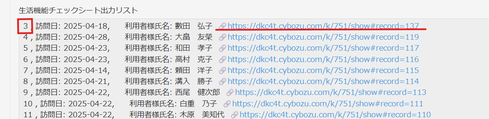
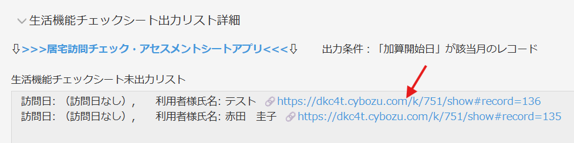

マニュアル
LIFEcsvファイル管理 マニュアル
・LIFEcsvファイル管理アプリの使い方、アップロードの仕方、仕様についてのマニュアルです。
←左のメニューから選択してください。
流れ
LIFEアップロードの際に必須である項目リスト
各様式に対してのLIFEアップロードの際に必須である項目リスト
※「'care_facility_id'(事業所番号)」「'service_code'(サービス種類コード)」「'external_system_management_number'(外部システム管理番号)」「'external_system_management_detail_number'(外部システム明細番号)」「'version'(バージョン番号)」は自動入力のため、入力、修正は不可です。これらに問題がある場合は管理者にお問い合わせください。
・利用者情報（顧客管理アプリ）
'care_facility_id'(事業所番号)
'service_code'(サービス種類コード)
'insurer_no'(保険者No)
'insured_no'(被保険者No)
'external_system_management_number'(外部システム管理番号)
'last_name'(利用者姓)
'first_name'(利用者名)
'last_name_kana'(利用者姓半角カナ)
'first_name_kana'(利用者名半角カナ)
'gender'(性別)
'birthday'(生年月日)
'care_level'(介護度)
'impaired_elderly_independence_degree'(障害高齢者の日常生活自立度)
'dementia_elderly_independence_degree'(認知症高齢者の日常生活自立度)
'version'(バージョン番号)
・口腔機能向上サービスに関する計画書（口腔機能チェックシートアプリ）
'care_facility_id'(事業所番号)
'service_code'(サービス種類コード)
'insurer_no'(保険者No)
'insured_no'(被保険者No)
'external_system_management_number'(外部システム管理番号)
'trinity_attempt'(リハ・個別機能栄養口腔の一体的取り組み)
'evaluate_date'(作成日)
'care_level'(介護度)
'impaired_elderly_independence_degree'(障害高齢者の日常生活自立度)
'dementia_elderly_independence_degree'(認知症高齢者の日常生活自立度)
'family_dentist'(かかりつけ歯科医)
'dental_checkup'(直近1年間の歯科受診)
'denture_using'(義歯の使用)
'food_form_ingestion'(栄養補給法・経口摂取)
'aspiration_pneumonitis'(誤嚥性肺炎の発症・既往)
'version'(バージョン番号)
・口腔機能向上サービスに関する計画書・口腔の健康状態の評価（口腔機能チェックシートアプリ）
'care_facility_id'(事業所番号)
'service_code'(サービス種類コード)
'insured_no'(保険者No)
'insurer_no'(被保険者No)
'external_system_management_number'(外部システム管理番号)
'external_system_management_detail_number'(外部システム明細番号)
'screening_and_monitoring_date'(作成日)
'version'(バージョン番号)
・口腔機能向上サービスに関する計画書・口腔機能改善加算計画（口腔機能チェックシートアプリ）
'care_facility_id'(事業所番号)
'service_code'(サービス種類コード)
'insured_no'(保険者No)
'insurer_no'(被保険者No)
'external_system_management_number'(外部システム管理番号)
'external_system_management_detail_number'(外部システム明細番号)
'plan_create_date'(作成日)
'planner_01'(計画立案者)
'planner_02'(計画立案者)
'planner_03'(計画立案者)
'service_provider_01'(サービス提供者)
'service_provider_02'(サービス提供者)
'service_provider_03'(サービス提供者)
'is_dental_disease'(歯科疾患)
'oral_cleaning_flag'(口腔衛生)
'oral_cavity_function_flag'(摂食嚥下等の口腔機能)
'food_form_flag'(食形態)
'nutrition_form_flag'(栄養状態)
'language_voice_function_flag'(音声・言語機能)
'is_prevention_of_aspiration_pneumonia'(誤嚥性肺炎の予防)
'is_goal_other'(その他)
'is_contents_oral_cleaning'(口腔清掃)
'is_contents_guidance_oral_cleaning'(口腔清掃に関する指導)
'is_contents_guidance_eating_and_swallowing'(摂食嚥下等の口腔機能に関する指導)
'is_contents_guidance_language_voice_function'(音声・言語機能に関する指導)
'is_contents_guidance_aspiration_pneumonia_prevention'(誤嚥性肺炎の予防に関する指導)
'is_contents_other'(実施内容その他)
'version'(バージョン番号)
・口腔機能向上サービスに関する計画書・実施記録（day_利用記録アプリ）
'care_facility_id'(事業所番号)
'service_code'(サービス種類コード)
'insured_no'(保険者No)
'insurer_no'(被保険者No)
'external_system_management_number'(外部システム管理番号)
'external_system_management_detail_number'(外部システム明細番号)
'plan_date'(利用日)
'record_service_provider_01'(サービス提供者)
'record_service_provider_02'(サービス提供者)
'record_service_provider_03'(サービス提供者)
'contents_oral_cleaning_01'(口腔清掃)
'contents_guidance_oral_cleaning_01'(口腔清掃に関する指導)
'contents_guidance_eating_and_swallowing_01'(摂食嚥下等の口腔機能に関する指導)
'contents_guidance_language_voice_function_01'(音声・言語機能に関する指導)
'contents_notice_aspiration_pneumonia_prevention_01'(誤嚥性肺炎の予防に関する指導)
'version'(バージョン番号)
・生活機能チェックシート（居宅訪問チェック・アセスメントシートアプリ）
'care_facility_id'(事業所番号)
'service_code'(サービス種類コード)
'insured_no'(保険者No)
'insurer_no'(被保険者No)
'external_system_management_number'(外部システム管理番号)
'trinity_attempt'(リハ・個別機能・栄養・口腔の一体的取り組み)
'evaluate_date'(訪問日)
'care_level'(介護度)
'impaired_elderly_independence_degree'(障害高齢者の日常生活自立度)
'dementia_elderly_independence_degree'(認知症高齢者の日常生活自立度)
'meal_status'(食事)
'is_meal_assignment'(食事課題)
'transfer_bed_chair_status'(移乗)
'is_transfer_bed_chair_assignment'(移乗課題)
'personal_hygiene_and_adjustment_status'(整容)
'is_personal_hygiene_and_adjustment_assignment'(整容課題)
'toilet_behavior_status'(排泄)
'is_toilet_behavior_assignment'(排泄課題)
'bathe_status'(入浴)
'is_bathe_assignment'(入浴課題)
'walking_status'(屋内移動)
'is_walking_assignment'(屋内移動課題)
'up_stairs_status'(階段昇降)
'is_up_stairs_assignment'(階段昇降課題)
'dressing_status'(更衣)
'is_dressing_assignment'(更衣課題)
'defecation_status'(排便)
'is_defecation_assignment'(排便課題)
'urination_status'(排尿)
'is_urination_assignment'(排尿課題)
'cooking_status'(調理)
'is_cooking_assignment'(調理課題)
'washing_status'(洗濯)
'is_washing_assignment'(洗濯課題)
'cleaning_status'(掃除)
'is_cleaning_assignment'(掃除課題)
'roll_over_status'(寝返り)
'is_roll_over_assignment'(寝返り課題)
'get_up_status'(起き上がり)
'is_get_up_assignment'(起き上がり課題)
'sitting_status'(座位)
'is_sitting_assignment'(座位課題)
'rising_from_chair_status'(立ち上がり)
'is_rising_from_chair_assignment'(立ち上がり課題)
'standup_status'(立位)
'is_standup_assignment'(立位課題)
'version'(バージョン番号)
・個別機能訓練計画書（個別機能訓練計画書アプリ）
'care_facility_id'(事業所番号)
'service_code'(サービス種類コード)
'insured_no'(保険者No)
'insurer_no'(被保険者No)
'external_system_management_number'(外部システム管理番号)
'trinity_attempt'(リハ・個別機能・栄養・口腔の一体的取り組み)
'evaluate_date'(計画開始日)
'care_level'(介護度)
'impaired_elderly_independence_degree'(障害高齢者の日常生活自立度)
'dementia_elderly_independence_degree'(認知症高齢者の日常生活自立度)
'disease_name_code'(傷病名)
'complications_control_cerebrovascular_disease'(合併症,"脳血管疾患")
'complications_control_fracture'(合併症,"骨折")
'complications_control_pneumonia'(合併症,"誤嚥性肺炎")
'complications_control_congestive_heart_failure'(合併症,"うっ血性心不全")
'complications_control_urinary_tract_infection'(合併症,"尿路感染症")
'complications_control_diabetes'(合併症,"糖尿病")
'complications_control_hypertension'(合併症,"高血圧症")
'complications_control_osteoporosis'(合併症,"骨粗しょう症")
'complications_control_articular_rheumatism'(合併症,"関節リウマチ")
'complications_control_cancer'(合併症,"がん")
'complications_control_depression_state'(合併症,"うつ病")
'complications_control_dementia'(合併症,"認知症")
'complications_control_decubitus'(合併症,"褥瘡")
'complications_control_nervous_disease'(合併症がある場合,"神経疾患")
'complications_control_motor_disorder'(合併症がある場合,"運動器疾患")
'complications_control_respiratory_disease'(合併症がある場合,"呼吸器疾患")
'complications_control_circulatory_disease'(合併症がある場合,"循環器疾患")
'complications_control_digestive_system_disease'(合併症がある場合,"消化器疾患")
'complications_control_kidney_disease'(合併症がある場合,"腎疾患")
'complications_control_endocrine_disease'(合併症がある場合,"内分泌疾患")
'complications_control_skin_disease'(合併症がある場合,"皮膚疾患")
'complications_control_neurological_disease'(合併症がある場合,"精神疾患")
'complications_control_other'(合併症がある場合,"その他")
'function_training_content_01'(プログラム内容)
'function_training_frequency_times_01'(頻度)
'function_training_date_01'(時間)
'version'(バージョン番号)
１，LIFEに必要なデータを各アプリに入れる。
・kintoneアプリにLIFEに必要なデータを入力してください。
・LIFEアップロードの際に必須である項目リストはこちら
・kintoneのLIFEに登録する為のデータはすべてアップロード用に文字変換しています。そのため入力するフィールドとアップロード用フィールドで1つの入力項目に対して2つのフィールドが設けられています。(日本語フィールドが入力用、英語フィールドがアップロード用)
・データを入力する際は、「LIFEアップロードの際に必須である項目リスト」に記載しているフィールドの( )内の日本語のフィールドに入力してください。
・「LIFEアップロードの際に必須である項目リスト」に記載しているフィールドの' '内にある英語のフィールドは編集不可です。( )内の日本語のフィールドに入力すると自動的に値が変わります。
２，毎月初（1日）にファイルが作成される
・毎月1日の午前1時～午前2時にファイルが自動的に「day_LIFE CSVファイル管理アプリ」へアップロードされます。
・毎月最終日までにはLIFEに必要なデータを入力済みの状態にしてください。
・毎月1日に先月分のデータが集計され、「day_LIFE CSVファイル管理アプリ」の年月フィールドに年月が入力されます。
例）2025年6月1日にアップロードされた場合、年月は「2025年5月」となる
３，各項目のファイルの詳細を確認する（グループフィールドを開く）
・毎月1日以降になったら先月分のレコードを開き、各項目のファイル添付フィールドの下にある「出力リスト詳細」を開いてください。
・未出力リスト内にあるデータは、出力条件に一致し且つ、LIFEアップロードの際に必須である項目に値が入って無い項目が1つでもあった場合にリストアップされます。(出力条件は「出力リスト詳細」内に記載されています。)
・未出力リスト内にあるデータは、CSVファイル内に出力されていません。
※未出力リスト内にあるデータは1行1レコードです。行末にあるURLはそのデータがあるkintoneのアプリのレコードのURLです。その行の修正を行いたい場合はURLを開き修正を行ってください。
・出力リスト内にあるデータは、出力条件に一致し且つ、LIFEアップロードの際に必須である項目に値がすべて入っている場合にリストアップされます。(出力条件は「出力リスト詳細」内に記載されています。)
・出力リスト内にあるデータは、CSVファイル内に出力さます。
・出力リスト内にあるデータの行の初めにある数字はCSVファイルの行数を指しています。(LIFEのエラーの際に出る行番号は「行番号+2 = 出力リスト内にあるデータの行の初めにある数字」です。)

※出力リスト内にあるデータは1行1レコードです。行末にあるURLはそのデータがあるkintoneのアプリのレコードのURLです。その行の修正を行いたい場合はURLを開き修正を行ってください。

４，未出力リストにデータが入っていればデータの行の終わりのURLを開きデータを確認する。
・未出力リスト内にデータが入っている場合、必ずLIFEアップロードしなければいけないデータなのか、LIFEアップロードしなくてもよいデータなのかを確認してください。
・LIFEアップロードしなければいけないデータなのに未出力リストに入っている状態でCSVをLIFEにアップロードしてしまうと未出力リストに入っていいるデータはLIFEにアップロードされません。

５，データを修正する。
・修正したいデータのURLを開き、データを修正してください。
・kintone内にあるLIFEに必要なデータのフィールドはこちら
・データの入力の仕方はこちら
６，すべての確認ができたらファイルの右にある「CSV再出力」ボタンを押して再度CSVを作成する。
※未出力リストにデータがなく、データを修正しない場合は「CSV再出力」ボタンは押さなくて大丈夫です。
・「CSV再出力」ボタンを押して再度CSVを作成した場合、もともとあったCSVファイルは削除され新しくCSVファイルを添付します。
・「CSV再出力」ボタンはすべての利用者が対象になっています。利用者の指定はできません。
７，未出力リストに名前がなくすべてのデータがあることが確認が取れたらファイルをダウンロードし、LIFEにアップロードする。
・CSVファイルをPCにダウンロードし、LIFEの「外部データ取り込み」にてファイルをアップロードしてください。
※新しい利用者がいる場合は先に「利用者情報」様式のcsvファイルをアップロードしてください。
※口腔機能向上サービスに関する計画書に関しては「口腔機能向上サービスに関する計画書」様式のcsvファイルを先にアップロードしてください。「口腔の健康状態の評価」、「口腔機能改善加算計画」、「実施記録」を先にアップロードするとエラーが出ます。
・アップロードした際にエラーが出た場合は、エラー箇所を修正して再度「CSV再出力」ボタンを押してCSVファイルを作成してください。「CSV再出力」ボタンを押す
・エラーの確認法
[ No. ] ⇒ エラー番号
[ 利用者ID ] ⇒ エラーが出た行の利用者ID
[ 利用者氏名 ] ⇒ エラーが出た行の利用者氏名
[ 種別 ] ⇒ エラーが出たデータの様式
[ 行番号 ] ⇒ CSVデータの行（縦） :例）エラー/行番号/1 ⇒ CSVファイルの上から1個目のデータ(画像の3の行)
[ 列番号 ] ⇒ CSVデータの列（横） :例）エラー/列番号/4 ⇒ CSVファイルの左から6個目のデータ(画像のDの列)
[ エラー説明 ] ⇒ エラーが出た個所の詳細
エラーが出たら行番号、列番号でエラーの個所を見つけエラー説明の内容を読み修正してください。csvファイルに直接修正をした場合、kintoneのデータは変更されません。なるべくkintoneのデータを修正するようにしてください。